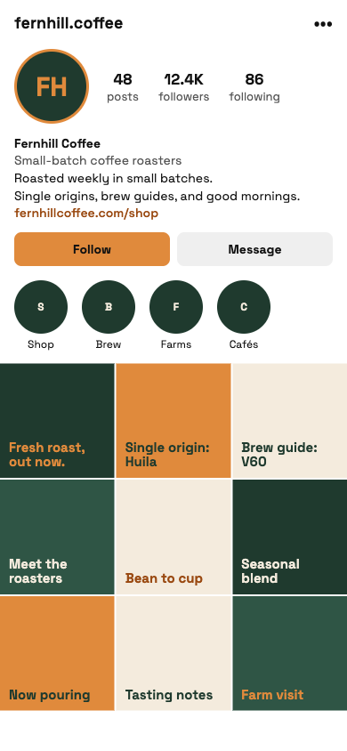
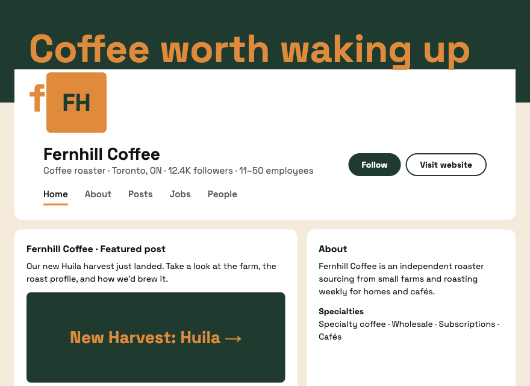

The Challenge
Building a social media presence requires more than simply posting content. Brands need a recognizable visual identity, consistent messaging, and engaging content that captures their audience's attention. The goal was to create a social media page & website that reflects the brand and communicates its services effectively.
The Solution
We developed a social media & website content strategy focused on visual consistency, creative storytelling, and audience engagement. This included designing branded posts, establishing a cohesive colour palette, and creating content that highlights the brand's personality, services, and value.
Project Gallery


Results & Key Outcomes
The project established a consistent social media page & website with a recognizable visual identity. The content provided a foundation for building brand awareness, showcasing services, and creating meaningful connections with the target audience.